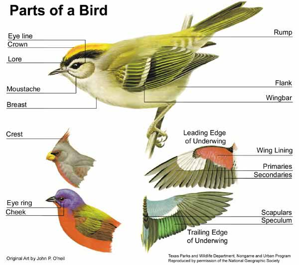
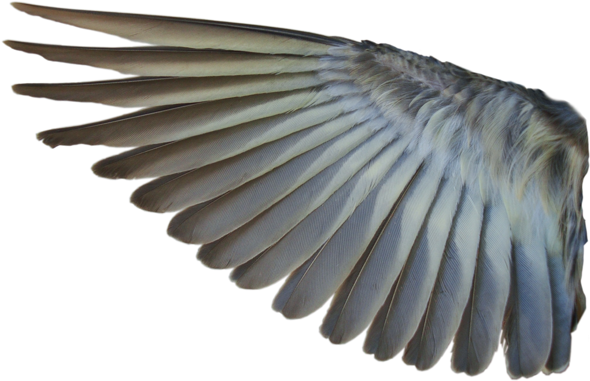
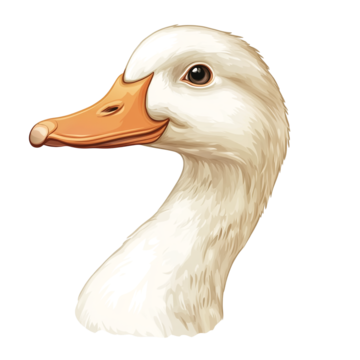
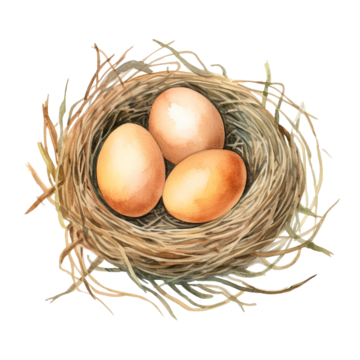

Birds are members of the class Aves, and have synapomorphies regarding their feathers, wings, beaks, eggs, and skeleton. Bird feathers are specialized structures that include a central rachis, a broad vane which composes most of the feather, downy barbs towards their base, and a calamus which attaches it to the body.
Feathers are the specialized, keratin-based structures that cover the bodies of birds and serve a variety of functions, including insulation, flight, display, and sensory reception. They are a key characteristic that distinguishes birds from other animals. Feathers allow birds to fly, but they also help them show off, blend in, stay warm, and keep dry. Some feathers evolved as specialized airfoilairfoilwinglike structure that produces lift and drag as it moves through the air for efficient flight. A bird's feathers play an important role in regulating their body temperature. |
|
 |
Wings are paired forelimbs modified for flight, featuring feathers that generate lift and thrust. They are made of bones, muscles, and feathers, with keratin complexes forming the feathers. Even flightless birds have wings, though they may be reduced or modified for other functions like balance or display. The average bird wing is a remarkably complicated thing. The bone-and-muscle part is relatively small, and most of the visible surface area is composed only of strong feathers. Thanks to the muscles, birds have the ability to constantly change the shape and angle of their wings for masterful control in the air. |
 |
Beaks are the hard, pointed, and often curved structures that protrude from the mouth of birds. They serve various functions, including obtaining food, preening feathers, and even defense. The shape of a beak is often adapted to the bird's diet and habitat. A cone shaped bill is found in many birds such as finches and grosbeaks. It is a strong beak used for cracking seeds. Thin, slender, pointed beaks are found mainly in insect eaters. They are used to pick insects off leaves, twigs, and bark. The bird with the largest beak, both absolutely and relative to its size, is the Australian Pelican. Its beak can reach up to 50 cm (20 inches) in length. This incredible size allows it to scoop up fish and water with its large bill, and then drain the water before swallowing the prey. |
 |
Laying eggs, or oviparity, is a natural reproductive process where female animals release their fertilized eggs outside their bodies. This method is used by birds as a way to nurture their developing embryos. Oviparous animals deposit their eggs in a variety of locations, depending on their species, to provide protection and the necessary environment for incubation. A hen can lay one egg every day, but it's not guaranteed that she'll lay an egg every single day. In reality, most hens lay one egg approximately every 24 to 26 hours. There are also factors, such as breed, housing, weather, and management, that can affect the rate of lay. |
The skeleton of a bird is lightweight but strong, featuring hollow, pneumatic bones and fused vertebrae to support flight and reduce weight. Birds have a unique fused collarbone (furcula or wishbone) and a keeled breastbone for efficient flight muscle attachment. Their skull is relatively large for their body size, and they have numerous, flexible neck vertebrae. The bones of birds are hollow (pneumatized), which reduces their overall weight without sacrificing strength. This is essential for flight as lighter bones make it easier to lift off the ground. |